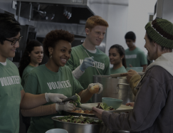
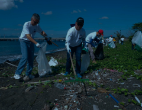
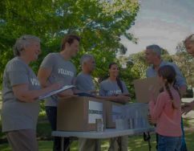
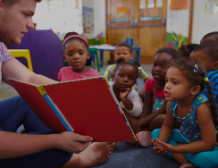
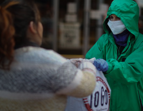

Volunteering can be a transformative experience that promotes personal growth and development.
Many people have already volunteered to their fullest! It’s your time!
Helping

By volunteering to serve food, you
can directly impact the lives
of individuals or families
facing food insecurity and make
a positive difference in your
community.
Cleaning

By volunteering for cleaning can
be a fulfilling and impactful
way to make a difference in
your community and beyond.
It's a wonderful way to give back
to your community or make a
positive impact on the environment.
Event
Volunteering for events can
be a fun and rewarding way to
get involved in your community,
support causes you care about,
and gain valuable experience.
Donation

Volunteering for donation initiatives
involves contributing your time and
skills to support organizations,
charities, or events that aim
to collect donations for various causes
School

Volunteering in schools is
a valuable way to contribute
to the education and well-being
of students while supporting
teachers and staff.
Your support can help create a
more enriching and inclusive
learning environment for
everyone involved.
Pandemic

Volunteering during pandemics
is a crucial way to provide support
to individuals, communities, and
organizations in times of crisis.
Pandemics like the COVID-19
pandemic have highlighted the
importance of volunteers in
areas such as healthcare,
emergency response and more.